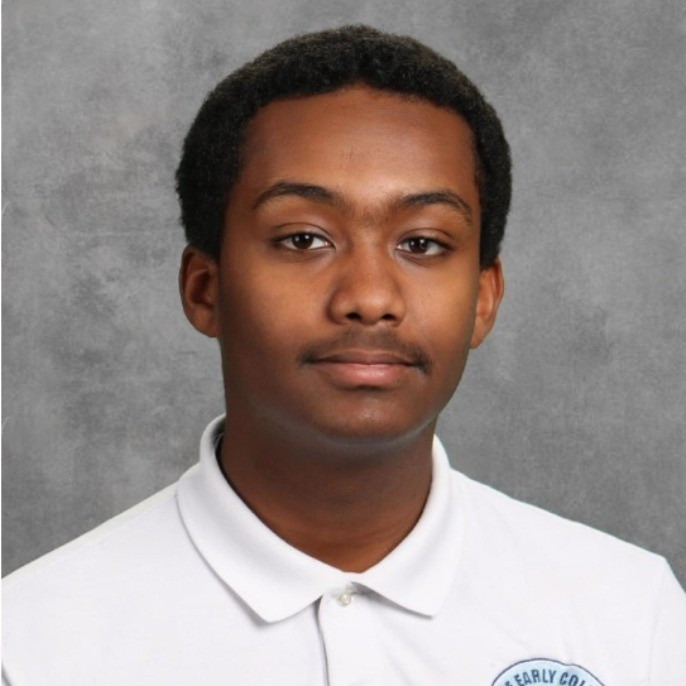

Biruk YidnekachewHello! My name is Biruk Yidnekachew. I'm a Junior at the Wake Early College of Information and Biotechnologies studying Computer Programming. I'm a high achieving student who's involved in various extracurricular activities. I am the President of our school's chapter of the National Technical Honor Society, President of a club called Young Citizens Club, and the Vice President of our school's Student Council Association.
While I am studying Computer Programming at my school currently, I'm looking to study Political Science and Government in college. I enjoy politics due to the level of impact one can have when holding political office. I hope to make a positive change in the world with all of my actions, and public policy is an excellent way to make that happen. I also tend to enjoy reading about public policy and law. Most importantly, my background in technology helps me to have a nuanced understanding of new frontiers in public policy.
I plan to apply to a 4-year university following my time at WECIB to earn a degree in Political Science. Then, I'll apply to law school in order to earn a law degree and become an attorney. I plan to become a public defender prior to running for political office as public defenders provide a critical function in to our legal system and I'm passionate about defending those accused of crimes. Following work as an attorney, I hope to run for local political office before an eventual presidential run.